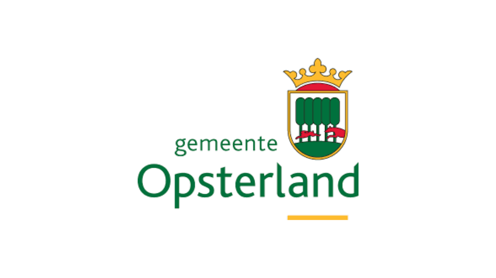

Goed Voorbereid
oefenen met keuzes in een crisissituatie
gemaakt door
·
in samenwerking met

DEMOWat doe jij als het echt misgaat?
Stap 0: Introductie
Je speelt een bewoner die te maken krijgt met een noodsituatie. Dat kan een grote stroomstoring zijn, een natuurbrand, een overstroming of een moeilijke reis naar huis.
Tijdens het spel maak je keuzes voor jezelf en je huishouden. Die keuzes hebben gevolgen voor hoe de situatie verloopt.
Na afloop krijg je een persoonlijk rapport. Daarin zie je wat goed ging, wat beter kon en hoe je je beter kunt voorbereiden, met een noodpakket en een noodplan.
Vul je gegevens in zoals ze echt voor jou gelden. Hoe eerlijker je dat doet, hoe beter het spel past bij jouw situatie. Zo leer je er meer van en krijg je advies dat beter bij jou past.
Tijdens het spel maak je keuzes voor jezelf en je huishouden. Die keuzes hebben gevolgen voor hoe de situatie verloopt.
Na afloop krijg je een persoonlijk rapport. Daarin zie je wat goed ging, wat beter kon en hoe je je beter kunt voorbereiden, met een noodpakket en een noodplan.
Vul je gegevens in zoals ze echt voor jou gelden. Hoe eerlijker je dat doet, hoe beter het spel past bij jouw situatie. Zo leer je er meer van en krijg je advies dat beter bij jou past.
Wie wonen er bij je?
Stap 1: Jouw situatie
Wat heb je al in huis en bij je?
Stap 1: Jouw situatie
Beantwoord de vragen eerlijk. Dan past het rapport beter bij jou.
Kies een scenario
Stap 2: Kies je scenario
Thuis komen: voorbereiding
Radio 1: 98.9 FM
Nog geen uitzending ontvangen.
Inventaris
Stap 5: Jouw rapport
Jouw scenario, hoe liep het?
Tijdlijn van jouw keuzes
Jouw crisisstatus
Dit deed je goed
Dit kun je verbeteren
Persoonlijke tips voor jouw situatie